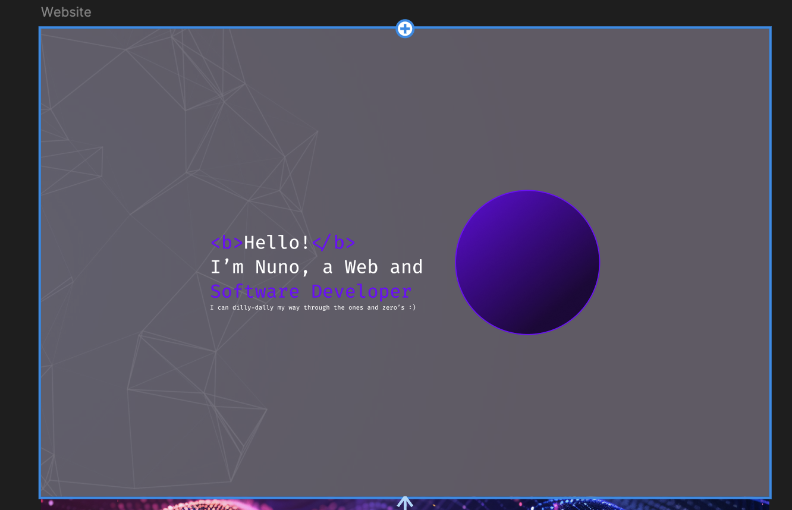
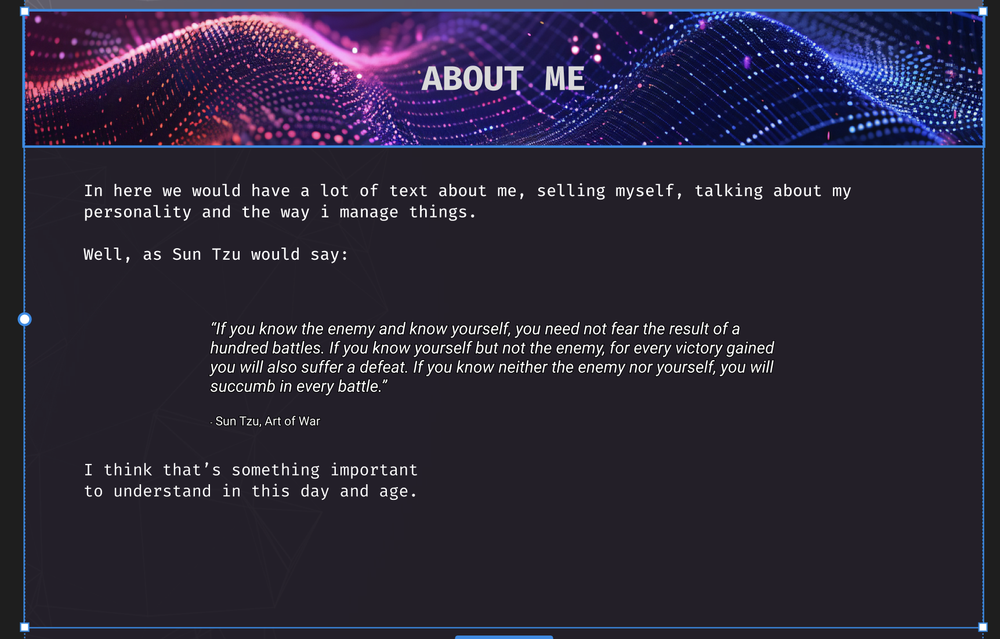
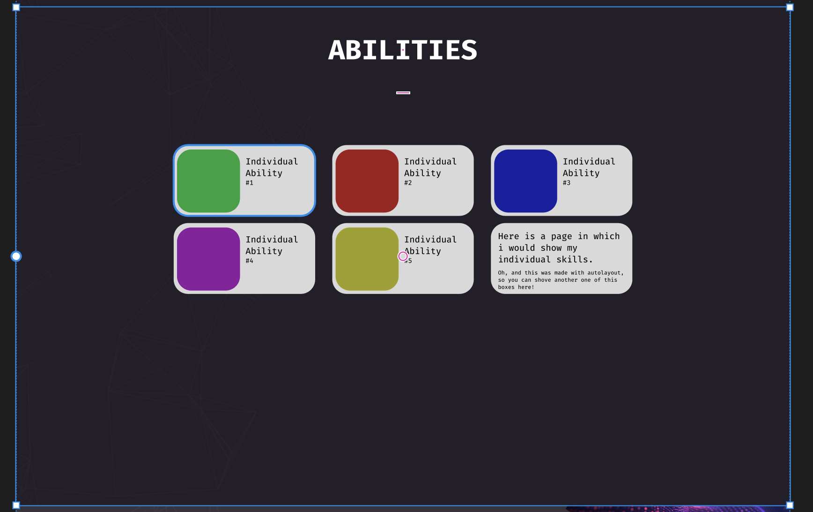
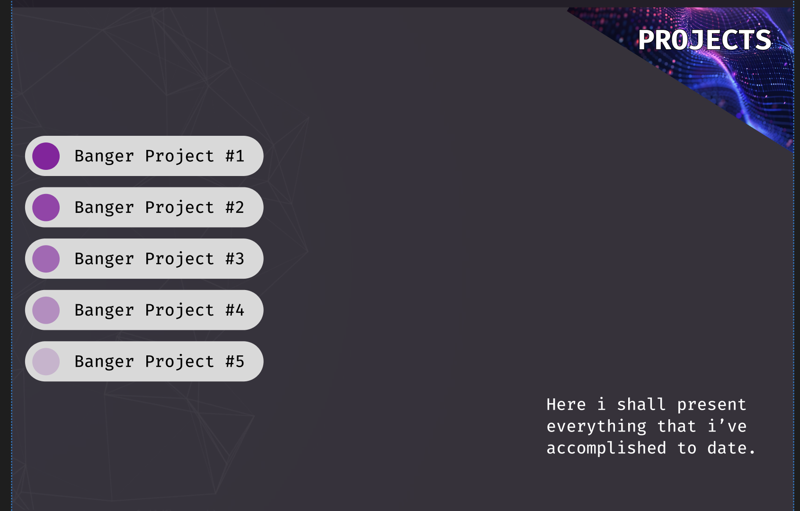
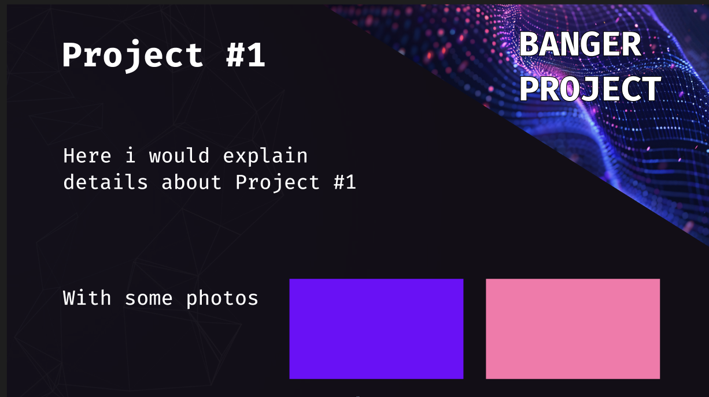
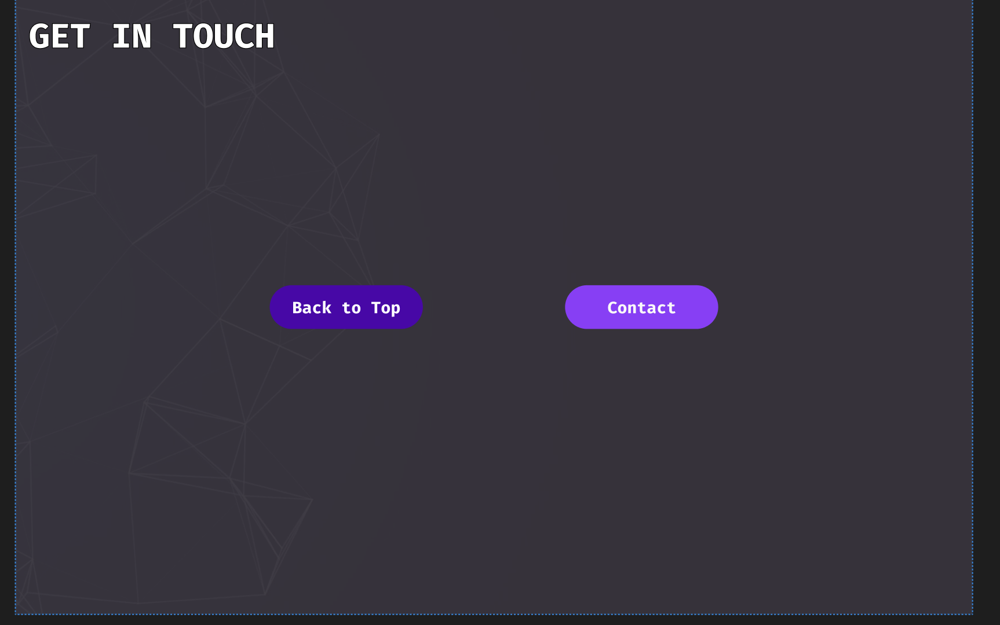
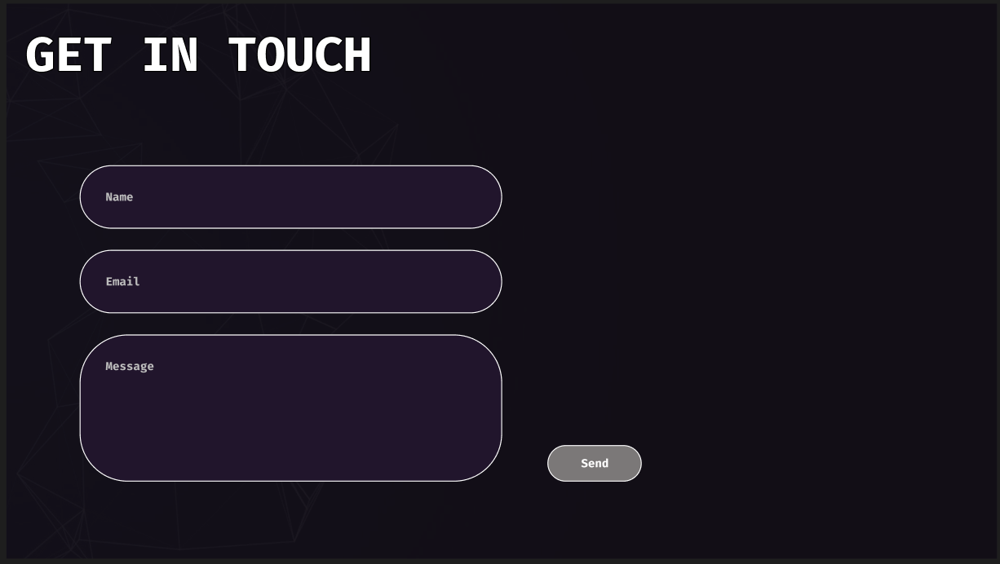
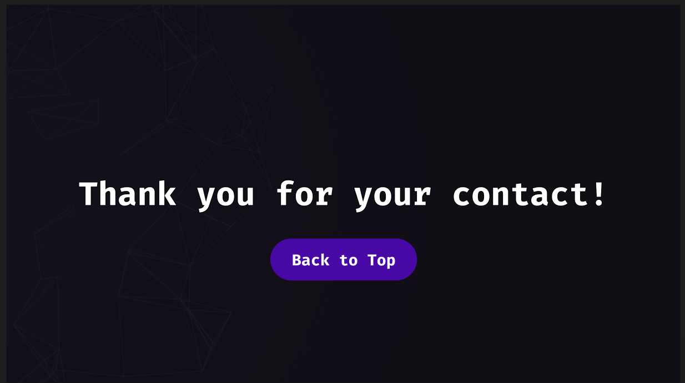
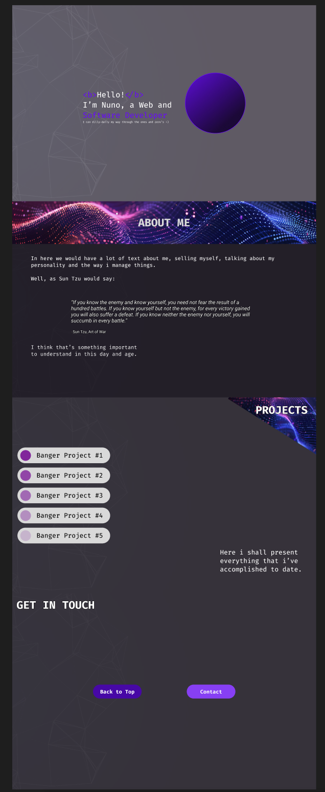

Exercicio 1
Hero Banner

No hero banner criei um bloco de texto e uma esfera (onde ficaria a
foto de perfil e depois envolvi tudo num frame 1440x900, frame esse
que como fill coloquei uma imagem assim como um filto de cor escura
com opacidade a 58%.
Engrupei o texto e a esfera e centrei o grupo.
About

No sobre coloquei o titulo dentro de um frame e novamente introduzi
uma imagem no fill.
Depois, coloquei algum texto aleatorio e mudei a fonte na quote porque
a fonte que estava a utilizar nao tinha 'italico'. Posicionei o texto
de maneira que a que me agradace dentro do novo frame 1440x900 e parti
para o proximo ecra.
Abilities

No habilidades, usei o mecanismo 'autolayout', primeiramente criei o que seria o componente 'habilidade' (um card com o que seria uma imagem e o nome da abilidade). Introduzi 5 componentes destes dentro de um novo frame denominado de 'grid' e coloquei o autolayout em row. Adicionei tambem um sexto card a explicar para o que seria a pagina e a falar do mecanismo utilizado.
Projects

No projetos fiz o mesmo mecanismo que nas habilidades. Criei um componente que seria o projeto e apos criar varios, introduzi-os num frame com autolayout desta vez em coluna. Coloquei um frame diagonal com um fill para o fundo do titulo da pagina e comecei a tratar do prototipo. Ao clicar em cada um dos butoes de projeto uma navegacao ocorre assim como a mudanca da variavel "Number". Variavel essa que me permitiu mostrar diferentes projetos dependendo do numero que o utilizador pressionou sem ter que criar multiplos ecras.
Project Open

No projeto aberto utilizo a variavel 'Number' defenida no ecra anterior pelo clique do utilizador para declarar que projeto foi escolhido.
Contact

No contacto introduzi dois butoes (componente agrupado com um retangulo e um texto). Um que nos leva para o topo da pagina e outro que nos leva para um formulario de contacto.
Contact Form

Aqui introduzi 4 agrupamentos de retangulos com texto. 3 para fazer os inputs (nome, email e mensagem) e o 4 para fazer o botao enviar. Dei-lhes cor e uma stroke para sobressairem no fundo escuro.
Thanks

Ao premir o botao enviar na pagina anterior (contact form) o utilizador vai para um ecra que agradece o contacto e o prompta a voltar para o topo da pagina. Reutilizei o botao na pagina 'contacto'.
Final

No final quando fui verificar o prototipo, nao estava com o efeito de scroll de landing page que queria entao envolvi os ecras todos numa frame com o mesmo tamanho de cada um dos frames (1440x900) e pus esse frame com overflow vertical.